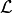
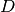
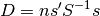
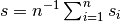
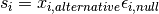
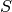
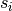

statsmodels.sandbox.regression.gmm.IVRegressionResults.compare_lr_test¶
-
IVRegressionResults.compare_lr_test(restricted, large_sample=False)¶ Likelihood ratio test to test whether restricted model is correct
Parameters: restricted : Result instance
The restricted model is assumed to be nested in the current model. The result instance of the restricted model is required to have two attributes, residual sum of squares, ssr, residual degrees of freedom, df_resid.
large_sample : bool
Flag indicating whether to use a heteroskedasticity robust version of the LR test, which is a modified LM test.
Returns: lr_stat : float
likelihood ratio, chisquare distributed with df_diff degrees of freedom
p_value : float
p-value of the test statistic
df_diff : int
degrees of freedom of the restriction, i.e. difference in df between models
Notes
The exact likelihood ratio is valid for homoskedastic data, and is defined as

where  is the likelihood of the model. With  distributed as chisquare with df equal to difference in number of parameters or equivalently difference in residual degrees of freedom.
The large sample version of the likelihood ratio is defined as

where 

is the average score of the model evaluated using the residuals from null model and the regressors from the alternative model and  is the covariance of the scores, . The covariance of the scores is estimated using the same estimator as in the alternative model.
This test compares the loglikelihood of the two models. This may not be a valid test, if there is unspecified heteroscedasticity or correlation. This method will issue a warning if this is detected but still return the results without taking unspecified heteroscedasticity or correlation into account.
This test compares the loglikelihood of the two models. This may not be a valid test, if there is unspecified heteroscedasticity or correlation. This method will issue a warning if this is detected but still return the results without taking unspecified heteroscedasticity or correlation into account.
is the average score of the model evaluated using the residuals from null model and the regressors from the alternative model and is the covariance of the scores, . The covariance of the scores is estimated using the same estimator as in the alternative model.
TODO: put into separate function, needs tests